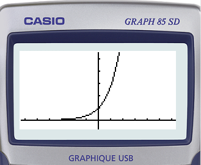
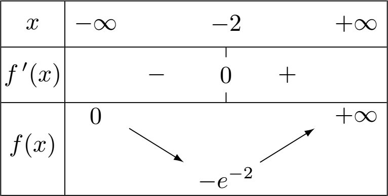

Définition de la fonction exponentielle
Définition
Definition
Il existe une unique fonction $f$ dérivable sur $\R$ telle que :
$$\boxed{f’=f}\quad\text{et}\quad \boxed{f(0)=1}$$
Cette fonction s’appelle fonction exponentielle et se note $\exp$.

Prop
$\qquad\exp(0)=1$
Rem
Il est possible d’observer l’allure de la courbe représentative de la fonction exponentielle à l’aide de la calculatrice.
La fonction exponentielle est croissante.
Et sa croissance est très rapide : $\quad\exp(21)>1~000~000~000$.
Pour des valeurs de $x$ de plus en plus grandes, la fonction exponentielle prend des valeurs de plus en plus grandes.
Prop
La fonction exponentielle est strictement positive sur $\R$.
Étude de la fonction exponentielle
Dérivabilité
Prop
La fonction exponentielle est dérivable sur $\R$ et
$$\boxed{\Big(\exp{(x)}\Big)’=\exp{(x)}}$$
Variations
Prop
La fonction exponentielle est strictement croissante sur $\R$.
En effet, $\Big(\exp{(x)}\Big)’>0$ car $\Big(\exp{(x)}\Big)’=\exp{(x)}>0$.
- \ul{Tableau de variations de $f(x)=\exp{(x)}$}
Courbe représentative
- \ul{Tableau de valeurs de $f(x)=\exp(x)$}
$$ \def\arraystretch{1.4}\begin{array}{|c|c|c|c|c|c|c|c|}\hline x & -3 & -2 & -1 & 0 & 1 & 2 & 3\\ \hline f(x)=\exp(x) & 0.049 & 0.135 & 0.367 & 1 & 2.718 & 7.389 & 20.08\\ \hline \end{array} $$
- \ul{Représentation graphique}
\begin{center} \begin{tikzpicture}[line cap=round,line join=round,>=triangle 45,x=1.0cm,y=1.0cm] \begin{axis}[x=1.83cm,y=0.8cm,axis lines=middle,ymajorgrids=true,xmajorgrids=true,xmin=-3.5,xmax=2.5,ymin=-0.5,ymax=8.5,xtick={-3.0,-2.0,…,2.0},ytick={-2,-1,…,8},] \draw[samples=50,line width=1.5pt,domain=-3.5:2.5,smooth,variable=\x,red] plot ({\x}, { \fpeval{ exp( (\x) ) } }); \draw [fill=black] (-3.,0.049787068367863944) circle (2.0pt); \draw [fill=black] (-2.,0.1353352832366127) circle (2.0pt); \draw [fill=black] (-1.,0.36787944117144233) circle (2.0pt); \draw [fill=black] (0.,1.) circle (2.0pt); \draw [fill=black] (1.,2.718281828459045) circle (2.0pt); \draw [fill=black] (2.,7.38905609893065) circle (2.0pt); \end{axis} \end{tikzpicture} \end{center}
Relation fonctionnelle
\theoreme$^{\text{\faHeart}}$
Pour tous réels $x$ et $y$, on a :
$$\boxed{\exp{(x\mathbf{+}y)}=\exp{(x)}\mathbf{\times}\exp{y}}$$
Rem
Cette formule permet de transformer une somme en produit et réciproquement.
Prop
\ul{Relation fonctionnelle$^{\text{\faHeart}}$}
Pour tous réels $x$ et $y$, on a :
- $\boxed{\exp{(-x)}=\cfrac{1}{\exp{(x)}}}\qquad\qquad$ ou $\quad\exp{(x)}\times\exp{(-x)}=1$
- $\boxed{\exp{(x-y)}=\cfrac{\exp{(x)}}{\exp{(y)}}}$
- $\boxed{\exp(nx)=\left(\exp{(x)}\right)^n}\qquad$ avec $n\in\mathbb{N}$
Demo
\ul{prop.1 et 2}
- $~$
$\qquad\quad\exp{(x)}\times\exp(-x)=\exp\Big(x+(-x)\Big)=\exp{(0)}=1$
- $~$
$\qquad\quad\begin{aligned}\exp{(x-y)}&=\exp{\Big(x+(-y)\Big)}\\~&=\exp{(x)}\times\exp{(-y)}\\~&=\exp{(x)}\times\cfrac{1}{\exp{(y)}}\\~&=\cfrac{\exp{(x)}}{\exp{(y)}}\end{aligned}$
Le nombre $e$
Definition
L’image de $1$ par la fonction exponentielle est notée $e$.
$$\exp{(1)}=e$$
\ul{Nouvelle notation :} $\quad\exp{(x)}=\exp(x\times 1)=\Big(\exp{(1)}\Big)^x =e^x$
\bw{r}{5cm}\vspace{-1cm}Comme $\pi$, le nombre $e$ est un nombre irrationnel, c’est à dire qu’il s’écrit avec un nombre infini de décimales sans suite logique. Ses premières décimales sont :\par\noindent$e \approx 2.718~281~828\ldots$ \vspace{-5cm}\ew
On note, pour tout $x\in\R$, $~\boxed{\exp{(x)}=e^x}$
Prop
Pour tous réels $x$ et $y$, on a :
\def\arraystretch{1.7}\begin{tabular}{|rl|}\hline Valeurs remarquables & $~e^0=1\quad$ et $\quad e^1=e$\\ \hline Signe et dérivée & $~e^x>0\quad$ et $\quad (ex)’=ex$\\ \hline Exp. d’une somme & $~e{(x+y)}=ex\times e^y$\\ \hline Exp. d’une différence & $~e{(x-y)}=\cfrac{ex}{e^y}\quad$ et $\quad e{(-x)}=\cfrac{1}{ex}$\\ \hline Puissance d’une exp. & $~{(ex)}$.\\ \hline \end{tabular}}=e^{nx}\quad$ avec $~n\in\mathbb{N
Méthode : Dériver une fonction exponentielle
- $f(x)=4x-3e^x$
On a $\quad \left(4x\right)’=4\quad$ et $\quad\left(ex\right)’=ex$
Donc $\quad f’(x)=4-3e^x$
- $g(x)=(x-1)e^x\qquad = u\times v\quad$ avec $\begin{cases}u=(x-1)& u’=1\\v=ex&v’=ex\end{cases}$
On a $\quad g’(x)=u’v+uv’=(1\times ex)+(x-1)ex=ex+xex-e^x$
Donc $\quad g’(x)=xe^x$
- $h(x)=\cfrac{e^x}{x}\qquad =\cfrac{u}{v}\quad$ avec $\begin{cases}u=e^x& u’=e^x\\v=x&v’=1\end{cases}$
On a $\quad h’(x)=\cfrac{u’v+uv’}{v2}=\cfrac{xex+ex}{x2}$
Donc $\quad h’(x)=\cfrac{(x+1)ex}{x2}$
Méthode : Simplifier les écritures
$\begin{aligned} A=\cfrac{e^{7}\times e{-4}}{e\qquad&=\cfrac{e}{7+(-4)}}{e\\ ~&=\cfrac{e}{3}}{e=e}{3-(-5)}=e\\ \end{aligned}$
$\begin{aligned} B={(e5)}\times e{-3}\qquad&=e\\ ~&=e^{-30}\times e}\times e^{-3{-3}~=e \end{aligned}$
$\begin{aligned} C=\cfrac{1}{\left(e{-3}\right)2}+\cfrac{{(e4)}{e^2\times e}{-6}}\qquad&=\cfrac{1}{e+\cfrac{e}{-4}}{e\\ ~&=e^{6}+1 \end{aligned}$}
$\begin{aligned} D=\cfrac{{\left(e{2x}\right)}3}{e^{(3x+1)}\times e{(-x-1)}}\qquad&=\cfrac{e\\ ~&=\cfrac{e}}{e^{(3x+1-x-1)}{6x}}{e~=e}{6x-2x}~=e \end{aligned}$
Méthode : Résoudre une équation ou une inéquation
Prop
Pour tous réels $a$ et $b$, on a :
- $ea=eb\quad\iff\quad a=b$
- $e^a\lt e^b\quad\iff\quad a\lt b$
Exemple
- Résoudre dans $\R$ l’équation : $\quad e{(x2-3)}-e^{(-2x)}=0$
$$ \begin{aligned} e{(x2-3)}-e^{(-2x)}=0\quad&\iff\quad e{(x2-3)}=e^{(-2x)}\\ \quad&\iff\quad x^2-3=-2x\\ \quad&\iff\quad x2+2x-3=0\quad~\Rightarrow\Delta=b2-4ac=16\\ \quad&\iff\quad \begin{cases} x_1=\cfrac{-2-\sqrt{16}}{2\times 1}=-3\\ x_2=\cfrac{-2+\sqrt{16}}{2\times 1}=1 \end{cases} \quad\iff\boxed{S=\left{-3~;~1\right}}\\ \end{aligned} $$
- Résoudre dans $\R$ l’inéquation : $\quad e^{(4x-1)}\ge 1$
$$ \begin{aligned} e^{(4x-1)}\ge 1 \quad&\iff\quad e^{(4x-1)}\ge e^{0}\\ \quad&\iff\quad 4x-1\ge 0\\ \quad&\iff\quad 4x\ge 1\\ \quad&\iff\quad x\ge \cfrac{1}{4}\quad\iff\quad\boxed{S=\left[\cfrac{1}{4}~;~+\infty\right[}\\ \end{aligned} $$
Méthode : Étudier une fonction exponentielle
Soit $f$ la fonction définie sur $\R$ par $f(x)=(x+1)e^x$.
- \ul{Calcul de $f’(x)$}
$f(x)=(x+1)e^x\quad=u\times v\qquad$ avec $\begin{cases}u=x+1\quad&u’=1\\v=ex\quad&v’=ex\end{cases}$
On a :
$$f’(x)=u’v+uv’\quad=(1\times ex)+(x+1)ex\qquad\rarr\boxed{f’(x)=(x+2)e^x}$$
- \ul{Signe de $f’(x)$}
Pour tout $x\in\R$, on a : $\quad e^x>0\quad$ donc $f’(x)$ est du signe de $x+2$.
$$f’(x)>0\quad\iff\quad x+2>0\quad\iff\quad x>(-2)$$
- \ul{Tableau de variations de $f$}
\bw{r}{5cm}\vspace{-4cm}Calcul de la valeur du minimum: $\quad f(\mtc{red}{-2})=(\mtc{red}{-2}+1)e{\mtc{red}{-2}}=-e$\ew

- \ul{Équation de la tangente à $\Cf$ au point d’abscisse $x=0$}
$f(0)=(0+1)\times e^0=1\quad$ et $\quad f’(0)=(0+2)\times e^0=2$
Une équation de la tangente à $\Cf$ en $x=0$ est :
$$y=f’(0)(x-0)+f(0)\quad\iff\quad y=2x+1$$
-
\ul{Courbe représentative de $f$}
\begin{center} \begin{tikzpicture}[line cap=round,line join=round,>=triangle 45] \begin{axis}[x=1.5cm,y=1.5cm,axis lines=middle,ymajorgrids=true,xmajorgrids=true,xmin=-4.5,xmax=2.5,ymin=-1.5,ymax=3.5,xtick={-5.0,-4.0,…,3.0},ytick={-2.0,-1.0,…,3.0},] \draw[line width=1.5pt,color=blue,smooth,samples=100,domain=-4.5:2.5] plot(\x,\fpeval{((\x)+1)/(1/exp(\x))}); \draw [line width=2.0pt,dash pattern=on 3pt off 5pt,domain=-4.5:2.5] plot(\x,{1+(\x)/0.5}); \draw [fill=red] (-2,\fpeval{-exp(-2)}) circle (2.0pt); \draw [fill=red] (0,1) circle (2.0pt); \end{axis}\end{tikzpicture} \end{center}
Exponentielle et suite géométrique
Rappel et propriété
\ul{Rappel :}
Une suite géométrique de raison $q$ et de 1$^{er}$ terme $u_0$ a pour terme général :
$$u_n=u_0\times q^n$$
Prop
Pour tout $n\in\mathbb{N}$ et tout $a\in\R$, on a : $~e{na}={(ea)}^{n}=1\times {(ea)}$.
Donc la suite $(e^{na})$ est une suite géométrique de raison $e^a$ et de 1$^{er}$ terme $1$.
Méthode : Déterminer une suite géométrique comprenant une exponentielle
- $u_n=e^{4n}\qquad=1\times {\left(e4\right)}n$
$(u_n)$ est une suite géométrique de raison $e^4$ et de 1$^\text{er}$ terme $~1$
- $v_n=2e^{-3n}\qquad=2\times {\left(e{-3}\right)}n$
$(v_n)$ est une suite géométrique de raison $e^{-3}$ et de 1$^\text{er}$ terme $~2$
- $w_n=-{e}^{\left(\cfrac{n}{3}\right)}\qquad=-1\times {\left({e}{\cfrac{1}{3}}\right)}n$
$(w_n)$ est une suite géométrique de raison $\left({e}^{\cfrac{1}{3}}\right)$ et de 1$^\text{er}$ terme $~(-1)$
- $z_n=e{(2n-1)}\qquad=e\times e{(-1)}=e\times {\left(e{2}\right)}n$
$(z_n)$ est une suite géométrique de raison $\left({e}^{2}\right)$ et de 1$^\text{er}$ terme $~e^{(-1)}$
- Terme général d’une suite géométrique de raison $\left(\cfrac{1}{e}\right)$ et de premier terme $3$.
$a_n=a_0\times q^n\qquad\iff\qquad a_n=3\times \left(\cfrac{1}{e}\right)n=3{\left(e}\right)n=3e$
Fonctions de la forme $~t\mapsto e^{kt}$
Variations de $~t\mapsto e^{kt}$
Prop
\bw{r}{5cm}\vspace{-1cm} $\begin{array}{|c|c|}\hline f(x) & f’(x)\\ \hline \hline e^{(x)} & e^{(x)}\\ \hline e^{(ax)} & a\times e^{(ax)}\\ \hline \end{array}$ \ew
La fonction $t\mapsto e^{kt}$, avec $k\in\R-{0}$, est dérivable sur $\R$.
Sa dérivée est la fonction $~t\mapsto k\times e^{kt}$
Demo
On rappelle que la dérivée de $~t\mapsto g(at+b)$ est $~t\mapsto a\times g’(at+b)$.
En considérant $\quad g(t)=e^t$, $a=k$ et $b=0$
On a : $\quad\left(e^{kt}\right)’=k\times e^{kt}$.
\ul{Ex. :}
Soit $\quad f(t)=e^{(-4t)}\quad$ alors $\quad f’(t)=-4e^{(-4t)}$.
Prop
- Si $k > 0$ : la fonction $~t\mapsto e^{kt}$ est strictement croissante.
- Si $k \lt 0$ : la fonction $~t\mapsto e^{kt}$ est strictement décroissante.
Demo
On a : $\left(e{kt}\right)’=ke$
Or, $~e^{kt}>0~$ pour tout réel $~t~$ et tout entier relatif $k$ non nul.
Donc le signe de la dérivée $~t\mapsto ke^{kt}$ dépend du signe de $k$.
- Si $(k\ge 0)$ alors $\left(ke^{kt}\ge 0\right)$ donc $~t\mapsto e^{kt}$ est croissante.
- Si $(k\le 0)$ alors $\left(ke^{kt}\le 0\right)$ donc $~t\mapsto e^{kt}$ est décroissante.
Représentation graphique de $~t\mapsto e^{kt}$
Méthode : Étudier $t\mapsto e^{kt}$ dans une situation concrète
Suite à une infection, le nombre de bactéries contenues dans un organisme en fonction du temps (en heures) peut être modélisé par la fonction $f$ définie sur $[0~;~10]$ et telle que :
$$f’(t)=0.14\times f(t)$$
- Montrer que la fonction $f$ définie sur $[0~;~10]$ par $f(t)=Ae^{0.14t}$ convient.
$$ \begin{aligned} f(t)=Ae^{0.14t}\quad&\iff f’(t)=A\times 0.14\times e^{0.14t}\\ \quad&\iff f’(t)=0.14\times \mtc{blue}{A\times e^{0.14t}}\\ \quad&\iff f’(t)=0.14\times \mtc{blue}{f(t)} \end{aligned} $$
$f$ définie sur $[0~;~10]$ par $f(t)=Ae^{0.14t}$ vérifie l’égalité :
$$f’(t)=0.14\times f(t)$$
- On suppose que $f(0)=50~000$. Déterminer $A$.
$$f(0)=A\times e^{(0.14\times 0)}=A\times e^0=A$$
Donc, si $\quad f(0)=50~000\quad$, on a $\quad A=50~000$.
Une expression de la fonction $f$ est donc : $\quad f(t)=50~000\times e^{0.14t}$
- Déterminer les variations de $f$ sur $[0~;~10]$.
Comme $k=0.14>0$, on en déduit que $~t\mapsto e^{0.14t}$ est croissante sur $[0~;~10]$.
Il en est de même pour la fonction $f(t)=50~000\times e^{0.14t}$.
- À l’aide de la calculatrice :
- Donner un arrondi (au millier près) du nombre de bactéries après $3$h puis $5$h$30$.
- Déterminer au bout de combien de temps le nombre de bactéries a-t-il doublé.
$f(3)=50~000\times e^{(0.14\times 3)}=50~000\times e^{0.42}\approx 76~000$
$f(5.5)=50~000\times e^{(0.14\times5.5)}=50~000\times e^{0.77}\approx 108~000$
Après $3$h, l’organisme contient environ $76~000$ bactéries.
Après $5$h$30$, l’organisme contient environ $108~000$ bactéries.
Le nombre de bactéries a doublé à partir de $100~000$ bactéries, soit au bout d’environ $5$h.